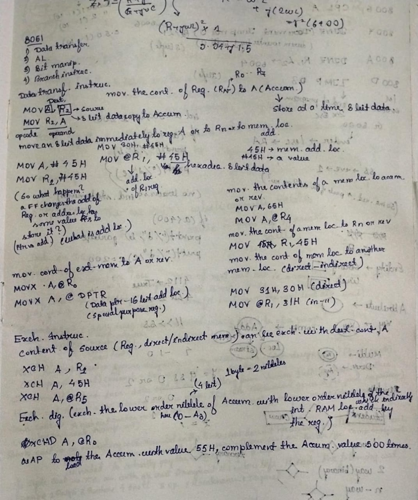
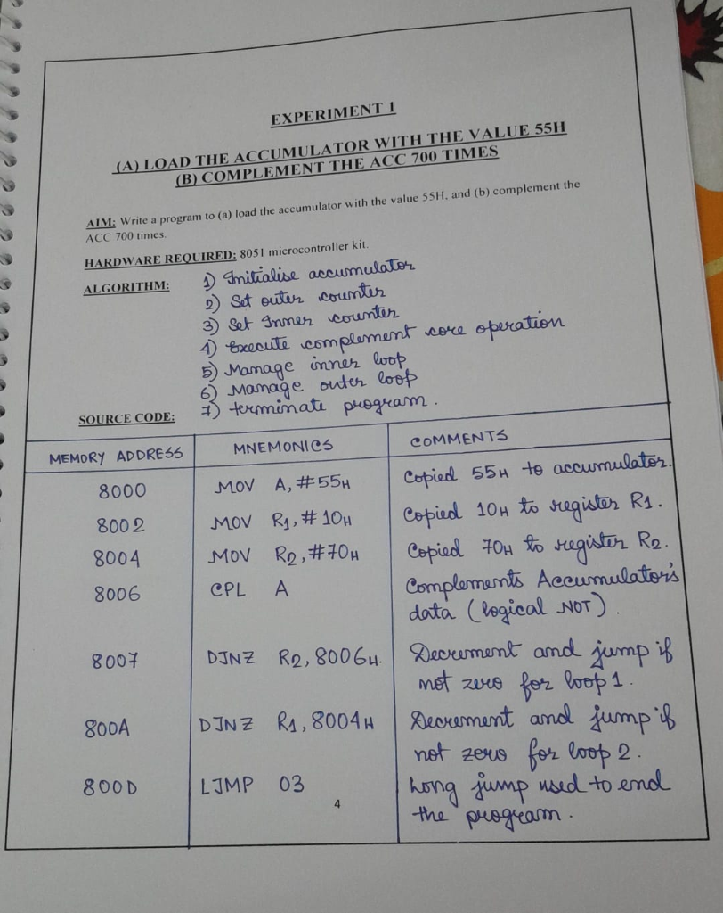
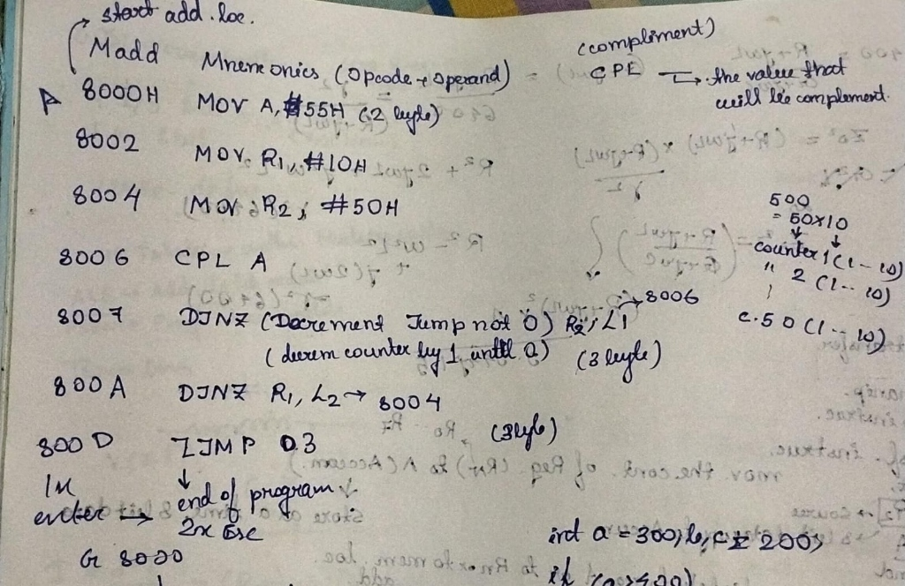
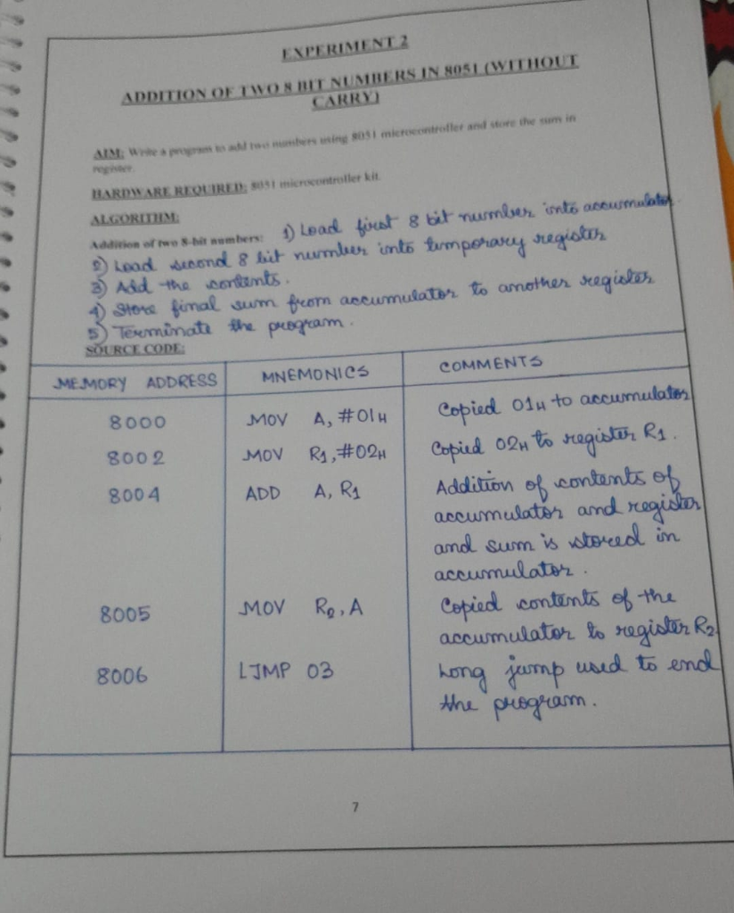
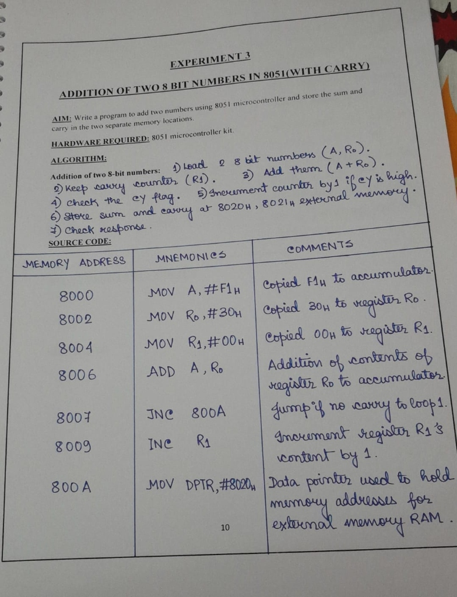
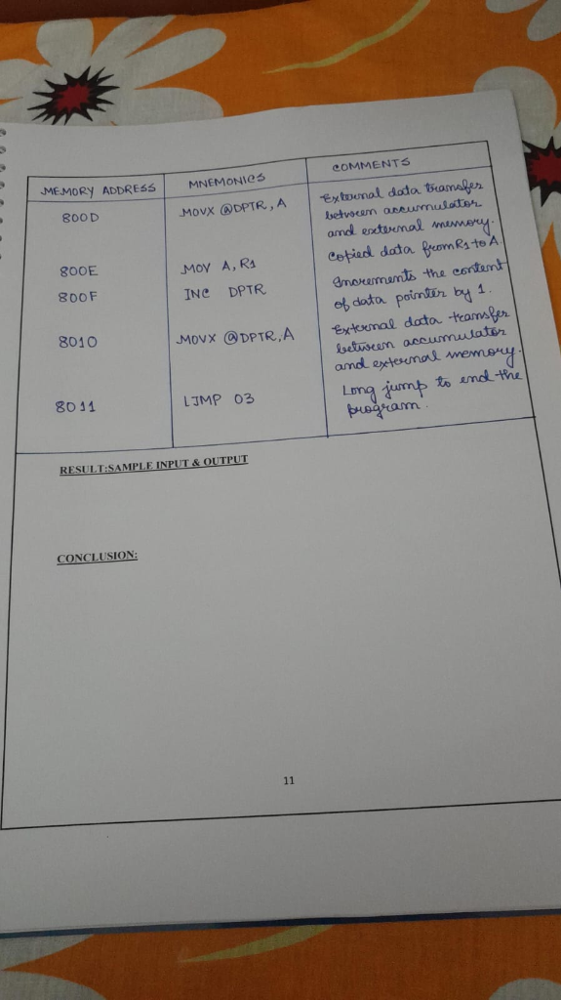
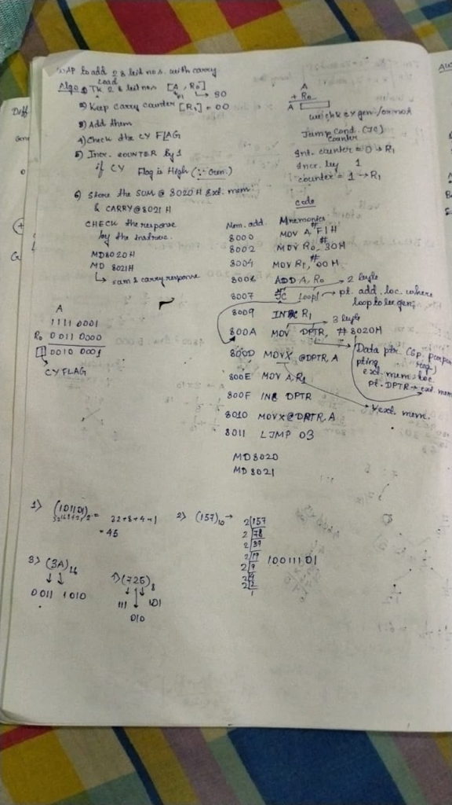
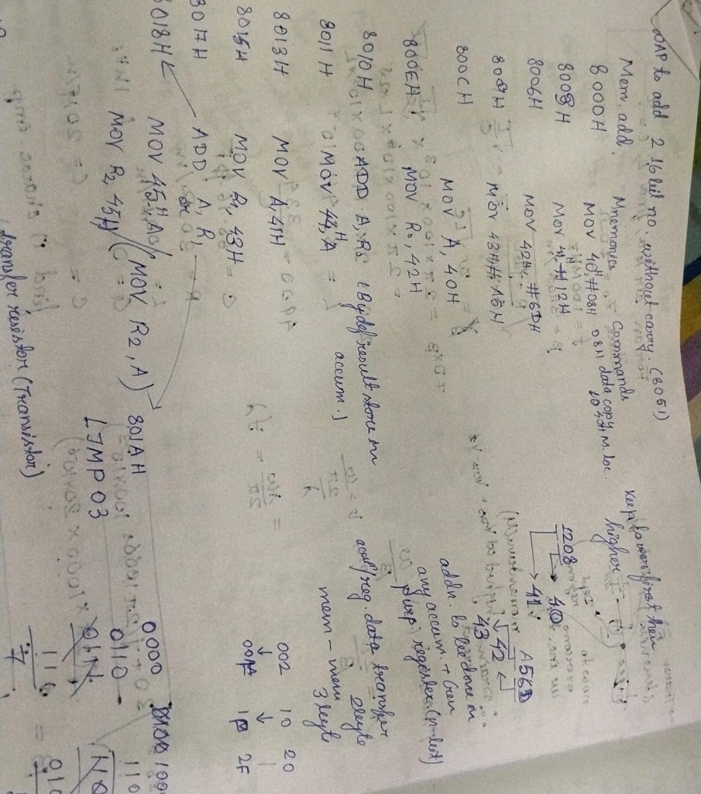

⬅️ Back to 8085 Notes
8051 Microcontroller Experiments
8051 Microcontroller Specifications
- Memory Capacity: 64KB RAM/ROM (maximum external memory).
- Data Bus: 8-bit.
- Address Bus: 16-bit (16 address lines).
- Addressing Range: 216 = 64KB = 65536 bytes (Ranges from 0000H to FFFFH).
- I/O Ports: 4 I/O ports providing a total of 32 I/O lines (1 port = 8 bits).
- Clock Frequency: 12 MHz.
- Machine Cycle: Takes 12 T-states within a machine cycle.
- ALE: Address Latch Enable.
- PSEN: Program Store Enable.
- Multiplexing: Lower order address and data lines (AD0 - AD7) are time-division multiplexed.
GENERAL THEORY: Instruction Sizes & Logical Clearance
Every instruction executed by the microcontroller consists of two parts: the Opcode (Operation Code - what to do) and the Operand (what data to do it on). The total byte size of an instruction depends entirely on the size of its operand.
- Opcode: Always takes exactly 1 byte of memory.
- Operand: Can take 0, 1, or 2 bytes depending on if it's internal, an 8-bit value, or a 16-bit value/address.
1-Byte Instructions (Opcode Only)
These instructions require no extra memory for the operand because the operand is either implicit (like the Accumulator) or refers to internal registers (R0-R7). The single byte specifies both the operation and the target.
- CPL A: Opcode only. The target (Accumulator) is implied. (1 byte)
- INC R1 / ADD A, R0: Registers are internal, no external data bytes needed. (1 byte)
- MOVX @DPTR, A: Moves data between Accumulator and external memory pointed to by DPTR. (1 byte)
2-Byte Instructions (Opcode + 8-bit Data/Address)
These instructions take 1 byte for the opcode, plus 1 extra byte to store an 8-bit immediate value or an 8-bit relative address.
- MOV A, #55H: Byte 1 = MOV A opcode, Byte 2 = 55H (8-bit data).
- MOV R1, #10H: Byte 1 = MOV R1 opcode, Byte 2 = 10H (8-bit data).
- DJNZ R2, 8006H: Byte 1 = DJNZ opcode, Byte 2 = Relative jump offset (the distance to jump back to 8006H).
3-Byte Instructions (Opcode + 16-bit Data/Address)
These instructions take 1 byte for the opcode, plus 2 extra bytes to store a full 16-bit immediate value or a full 16-bit memory address.
- MOV DPTR, #8020H: Byte 1 = MOV DPTR opcode, Byte 2 = 80H (High byte), Byte 3 = 20H (Low byte).
- LJMP 03 (Long Jump): Byte 1 = LJMP opcode, Byte 2 & 3 = The 16-bit target address to jump to.

Hand-written Notes: Instruction Sets Overview
8051 Instruction Set Overview
The 8051 instruction set is divided into 4 main categories:
- Data transfer
- Arithmetic Logic (A.L.)
- Bit manipulation
- Branch instructions
1. Data Transfer Instructions
Moves 8-bit data at a time. Format: MOV Dest, Source.
- Addressing Distinction: #45H indicates a literal value (hexadecimal 8-bit data), whereas 45H without the '#' indicates a memory address location.
- Immediate Data to Register/Memory:
- MOV A, #45H
- MOV R2, #45H
- MOV 30H, #45H
- MOV @R1, #45H (The '@' indicates the address location held by the R1 register)
- Memory to Accumulator (or reverse):
- Memory to Register (or reverse):
- Memory to Memory (direct & indirect):
- MOV 31H, 30H (Direct)
- MOV @R1, 31H (Indirect)
- External Memory to Accumulator (or reverse):
- MOVX A, @R0
- MOVX A, @DPTR (DPTR is the Data Pointer, a 16-bit special purpose register for 16-bit address locations)
2. Exchange Instructions
Content of a source (Register, direct, or indirect memory) can be exchanged with the destination content (Accumulator).
- XCH A, R1
- XCH A, 45H
- XCH A, @R0
- Exchange Digit (XCHD): Exchanges the lower order nibble (4 bits) of the Accumulator with the lower order nibble of the internal RAM location which is indirectly addressed by the register. (Note: 1 byte = 2 nibbles).

Original Hand-written Notes
EXPERIMENT 1
(A) LOAD THE ACCUMULATOR WITH THE VALUE 55H
(B) COMPLEMENT THE ACC 700 TIMES
AIM: Write a program to (a) load the accumulator with the value 55H, and (b) complement the ACC 700 times.
HARDWARE REQUIRED: 8051 microcontroller kit.
ALGORITHM:
- Initialise accumulator
- Set outer counter
- Set Inner counter
- Execute complement core operation
- Manage inner loop
- Manage outer loop
- terminate program.
SOURCE CODE:
| MEMORY ADDRESS |
MNEMONICS |
COMMENTS |
| 8000 |
MOV A, #55H |
Copied 55H to accumulator. |
| 8002 |
MOV R1, #10H |
Copied 10H to register R1. |
| 8004 |
MOV R2, #70H |
Copied 70H to register R2. |
| 8006 |
CPL A |
Complements Accumulator's data (logical NOT). |
| 8007 |
DJNZ R2, 8006H |
Decrement and jump if not zero for loop 1. |
| 800A |
DJNZ R1, 8004H |
Decrement and jump if not zero for loop 2. |
| 800D |
LJMP 03 |
Long jump used to end the program. |

Detailed Annotated Breakdown (Experiment 1)
Detailed Byte Analysis & Logic (Experiment 1)
This section provides a line-by-line logical clearance of the bytes and operations used in Experiment 1, without breaking the main table.
- 8000H: MOV A, #55H (2 Bytes)
Mnemonics = Opcode + Operand. This is the starting address location. Takes 2 bytes, so the next instruction is at 8002H.
- 8006H: CPL A (1 Byte)
Complement: Flips the bits of the value currently in the accumulator. Takes 1 byte, so the next instruction is at 8007H.
- 8007H: DJNZ R2, 8006H (3 Bytes)
Decrement Jump not 0: Decrements the counter by 1. If it is not zero, it jumps back to the label (address 8006H). Annotated as taking 3 bytes in this specific lab kit, putting the next address at 800AH.
- 800AH: DJNZ R1, 8004H (3 Bytes)
Outer loop decrement. Jumps back to 8004H until R1 reaches zero. Also annotated as taking 3 bytes, putting the next address at 800DH.
- 800DH: LJMP 03 (3 Bytes)
End of program.
Loop Calculation Note: To loop 500 times, the nested counters are set up as factors (e.g., 50 × 10 = 500). Counter 1 handles the inner loop, and Counter 2 handles the outer loop.
Kit Execution: G 8000 (Go to 8000) is used to execute the program directly on the hardware kit.

Original Hand-written Notes (Experiment 2)
EXPERIMENT 2
ADDITION OF TWO 8 BIT NUMBERS IN 8051 (WITHOUT CARRY)
AIM: Write a program to add two numbers using 8051 microcontroller and store the sum in register.
HARDWARE REQUIRED: 8051 microcontroller kit.
ALGORITHM: Addition of two 8-bit numbers:
- Load first 8 bit number into accumulator
- Load second 8 bit number into temporary register
- Add the contents.
- Store final sum from accumulator to another register
- Terminate the program.
SOURCE CODE:
| MEMORY ADDRESS |
MNEMONICS |
COMMENTS |
| 8000 |
MOV A, #01H |
Copied 01H to accumulator. |
| 8002 |
MOV R1, #02H |
Copied 02H to register R1. |
| 8004 |
ADD A, R1 |
Addition of contents of accumulator and register and sum is stored in accumulator. |
| 8005 |
MOV R2, A |
Copied contents of the accumulator to register R2. |
| 8006 |
LJMP 03 |
Long jump used to end the program. |


Original Hand-written Notes (Experiment 3)
EXPERIMENT 3
ADDITION OF TWO 8 BIT NUMBERS IN 8051 (WITH CARRY)
AIM: Write a program to add two numbers using 8051 microcontroller and store the sum and carry in the two separate memory locations.
HARDWARE REQUIRED: 8051 microcontroller kit.
ALGORITHM: Addition of two 8-bit numbers:
- Load 2 8 bit numbers (A, R0).
- Keep carry counter (R1).
- Add them (A + R0).
- Check the CY flag.
- Increment counter by 1 if cy is high.
- Store sum and carry at 8020H, 8021H external memory.
- Check response.
SOURCE CODE:
| MEMORY ADDRESS |
MNEMONICS |
COMMENTS |
| 8000 |
MOV A, #F1H |
Copied F1H to accumulator. |
| 8002 |
MOV R0, #30H |
Copied 30H to register R0. |
| 8004 |
MOV R1, #00H |
Copied 00H to register R1. |
| 8006 |
ADD A, R0 |
Addition of contents of register R0 to accumulator. |
| 8007 |
JNC 800A |
Jump if no carry to loop 1. |
| 8009 |
INC R1 |
Increment register R1's content by 1. |
| 800A |
MOV DPTR, #8020H |
Data pointer used to hold memory addresses for external memory RAM. |
| 800D |
MOVX @DPTR, A |
External data transfer between accumulator and external memory. |
| 800E |
MOV A, R1 |
Copied data from R1 to A. |
| 800F |
INC DPTR |
Increments the content of data pointer by 1. |
| 8010 |
MOVX @DPTR, A |
External data transfer between accumulator and external memory. |
| 8011 |
LJMP 03 |
Long jump to end the program. |

Detailed Annotated Breakdown (Experiment 3)
Detailed Byte Analysis, Binary Math & Logic (Experiment 3)
This section provides a line-by-line logical clearance of the bytes and operations used in Experiment 3, based on the annotated rough draft.
Kit Verification: To check the results on the hardware kit, use the memory display commands MD 8020H and MD 8021H to view the stored sum and carry responses respectively.

Rough Draft Notes (Experiment 4)
EXPERIMENT 4 (ROUGH DRAFT)
ADD TWO 16-BIT NUMBERS WITHOUT CARRY (8051)
Note: This is an annotated rough draft. The formal lab manual format (Aim, Algorithm) is not yet available.
MEMORY MAP (Little Endian approach):
The 16-bit numbers are split. "Keep lower first then higher".
Number 1: 1208H → Lower byte 08H at 40H, Higher byte 12H at 41H.
Number 2: A55DH → Lower byte 5DH at 42H, Higher byte A5H at 43H.
DRAFT SOURCE CODE:
| MEMORY ADDRESS |
MNEMONICS |
COMMENTS |
| 8000H |
MOV 40H, #08H |
08H data copy to 40H memory loc. |
| 8003H |
MOV 41H, #12H |
Load higher byte of 1st number. |
| 8006H |
MOV 42H, #5DH |
Load lower byte of 2nd number. |
| 8009H |
MOV 43H, #A5H |
Load higher byte of 2nd number. |
| 800CH |
MOV A, 40H |
Move lower byte of 1st number to Accumulator. |
| 800EH |
ADD A, 42H |
Add lower byte of 2nd number. |
| 8010H |
MOV 44H, A |
Store lower byte result in 44H. |
| 8012H |
MOV A, 41H |
Move higher byte of 1st number to Accumulator. |
| 8014H |
ADD A, 43H |
Add higher byte of 2nd number. |
| 8016H |
MOV 45H, A |
Store higher byte result in 45H. |
| 8018H |
LJMP 03 |
End of program. |
Detailed Byte Analysis & Logical Annotations
- 3-Byte Instructions (Direct Memory Initialization):
Instructions like MOV 40H, #08H take 3 bytes (Opcode + Direct Address + Immediate Data). This is why the memory addresses jump by 3 (from 8000H → 8003H → 8006H). Annotated in the draft as "mem - mem 3 byte".
- 2-Byte Instructions (Accumulator/Register Data Transfer):
Instructions like MOV A, 40H and ADD A, 42H take 2 bytes (Opcode + Direct Address). This is why the memory addresses jump by 2 (from 800CH → 800EH → 8010H). Annotated in the draft as "accum/reg. data transfer 2 byte".
- Accumulator Dependency:
Annotated with "By default result store in accum." and "addn to be done on any accum + gen purp register." This highlights the 8051 architectural rule that arithmetic operations like ADD must involve the Accumulator, and the result is inherently stored there.